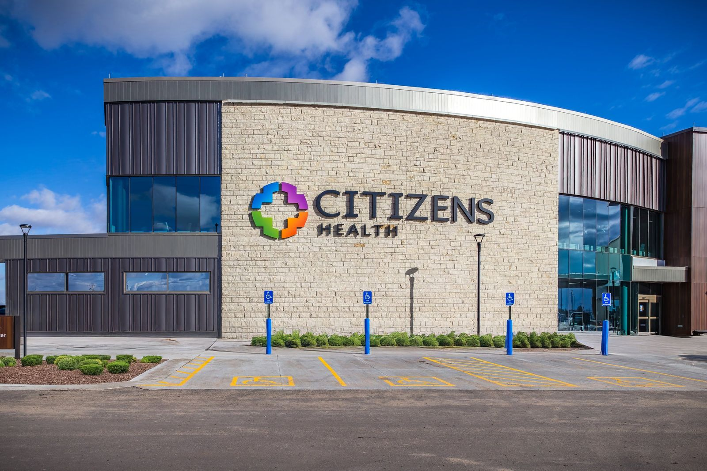

Quality care, close to home.
Citizens Medical Center and Family Center for Health Care share one campus in Colby, with care for every stage of life.
Find a provider
Find the right provider
Search our family medicine providers, surgeons, and visiting specialists by name or specialty.
Accepting new patients
 Accepting new patients
Accepting new patientsHannah Bayliff, M.D.
Family Medicine & Obstetrics Accepting new patientsJennifer Haag, PA-C
Family Medicine Accepting new patientsGabriela Newell, M.D.
Family Medicine & Obstetrics Accepting new patientsAnne Recker, M.D.
Family Medicine & Obstetrics Accepting new patientsLandon Younger, D.O.
Family Medicine & ObstetricsOur campus
Where to find us
The hospital and Family Center share one campus at 1525 S. Franklin Ave.


Citizens Medical Center
HospitalEmergency care, surgery, inpatient care, the Maternity Suites, imaging, lab, rehab, and the Specialty Clinic.

Family Center for Health Care
ClinicFamily medicine, obstetrics, pediatrics, women's and men's health, and urgent care.
Mon–Thu 7am–6pm · Fri 7am–4pm · Walk-ins weekday mornings and Saturdays

Prairie Senior
Senior careLong-term care and rehabilitation for seniors, with regular visits from our medical providers.

Palace Drug Store
PharmacyPrescriptions and pharmacist advice downtown, moving to our main campus early next year.
Get care now
Where to go when you need care
Emergency, same-day, and scheduled care, all in Colby.
Emergency Room
Urgent Care
Your Primary Care Provider
For a life-threatening emergency, call 911.

Maternity Suites
Have your baby close to home
Prenatal visits at Family Center, classes to help you prepare, and delivery in the Maternity Suites at Citizens Medical Center, with providers who know you.
Explore obstetricsServices
Care you don't have to drive for
Most of what your family needs is available in Colby, from your first prenatal visit to seeing a visiting specialist.
Obstetrics
Prenatal care, delivery, and newborn care with family physicians who know you before and after the birth.
Emergency Care
Open 24 hours a day. A Level IV Trauma Center that stabilizes seriously injured patients.
Orthopedics
Joint pain, sports injuries, and hip and knee replacement with our orthopedic surgeons. No referral needed, and surgery is done here.
General Surgery
Northwest Kansas Surgical Associates provide a full range of surgical services inside Citizens Medical Center.
Specialty Clinic
Cardiologists, neurologists, urologists, and more travel to Colby so you can see them close to home.
Audiology
Hearing exams, hearing aids, and cochlear implant programming with Dr. Brooke Larson. No referral needed for most services.
Specialty Clinic
Specialists come to Colby
Specialists see patients here on a regular schedule, so you can get specialty care without the drive.
To schedule, call the Specialty Clinic(785) 460-1223
Why Citizens Health
Care you can trust, from people you know
We deliver quality care close to home, whether you need emergency treatment, specialty care, or a checkup. Our doctors, nurses, and staff are members of your community, and we care for you like our own family.
- Level IV Trauma CenterCredentialed by KDHE and the American College of Surgeons
- Baby-Friendly designatedThe gold standard for supporting breastfeeding
- High 5 for Mom & BabyFive evidence-based breastfeeding practices
- Emergency care, 24/7A Level IV Trauma Center, open every day of the year
Official badge artwork will replace these circles.
Careers
Build your career close to home
See open jobs at our hospital, Family Center, Prairie Senior, and Citizens Clubhouse.
View open jobs
Support the Citizens Foundation
Gifts to the Foundation fund scholarships for future caregivers and new equipment for our hospital.
Make a gift